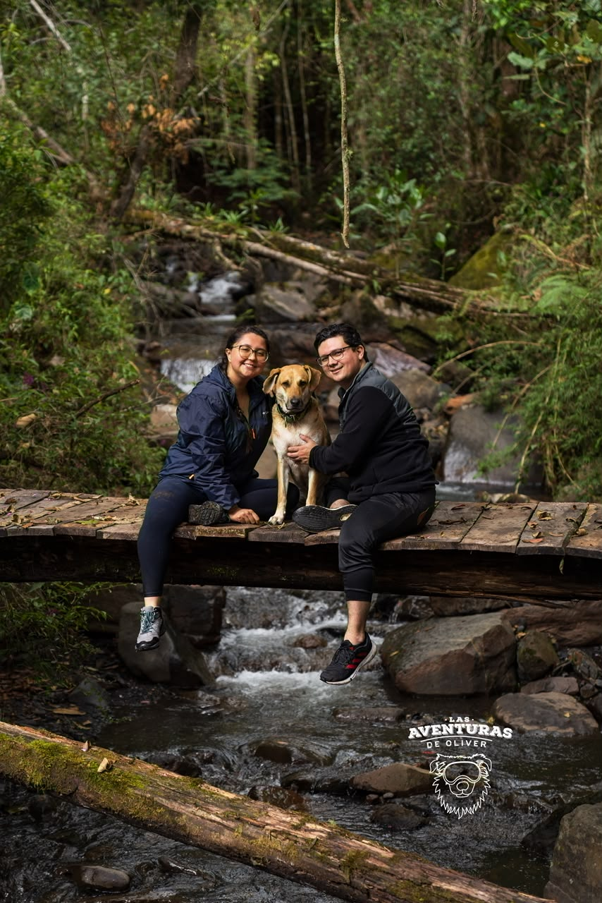
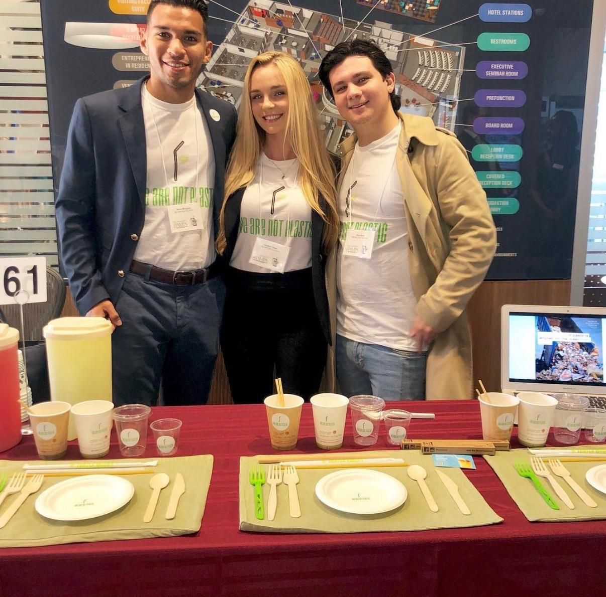
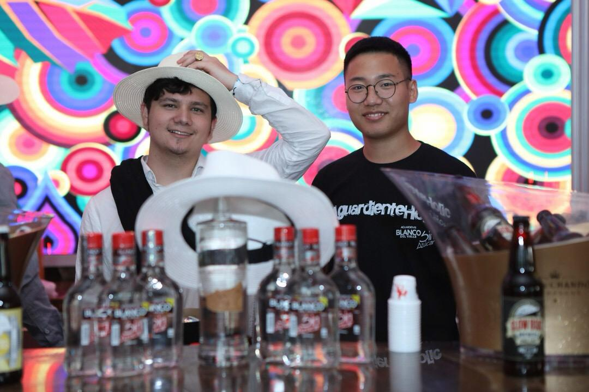
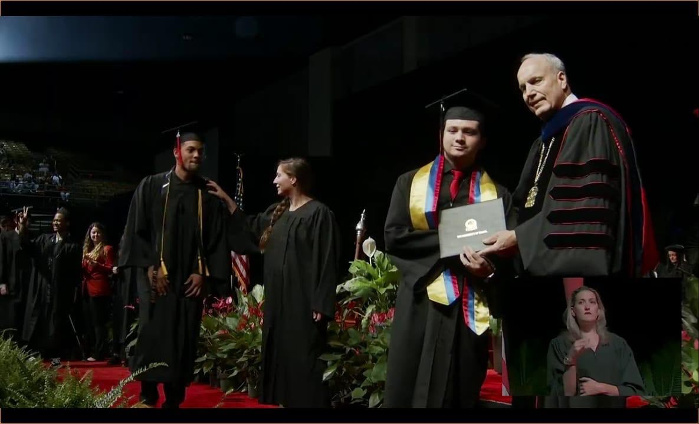
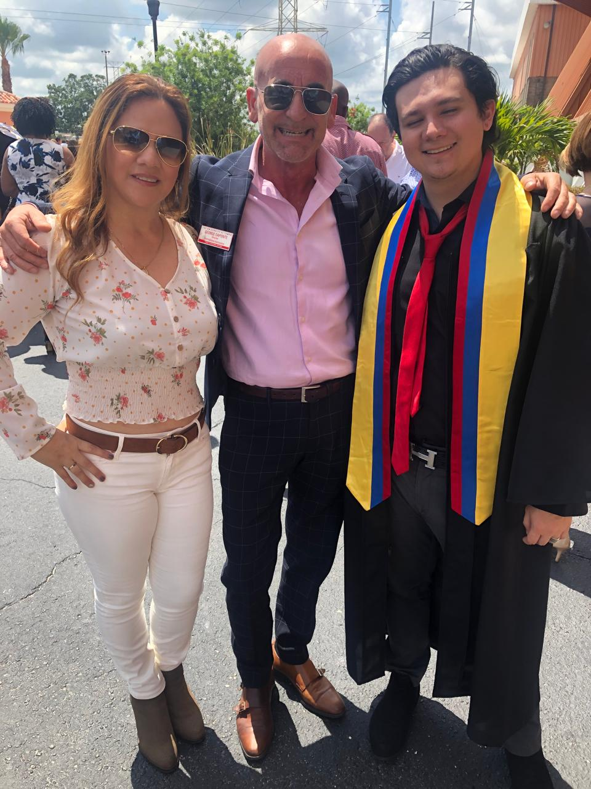
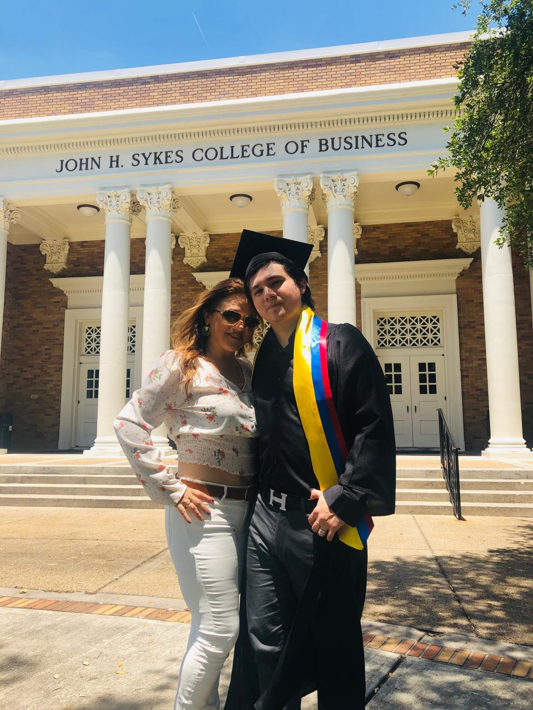
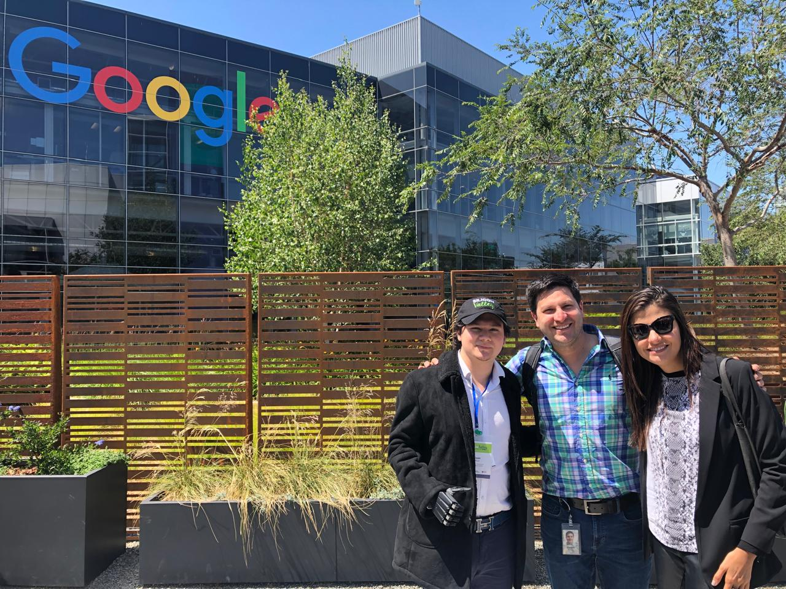
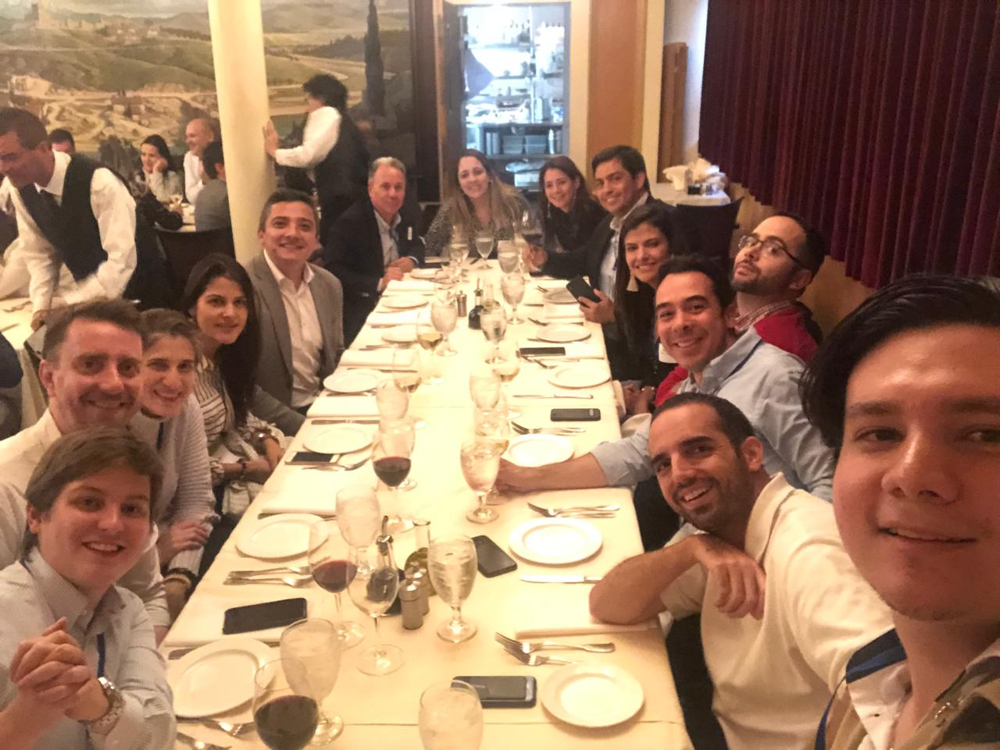
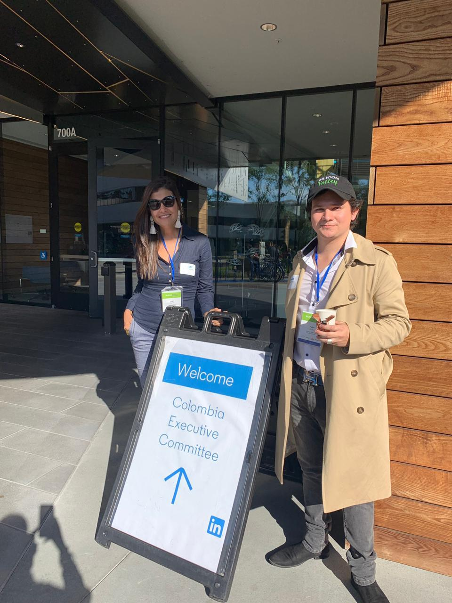
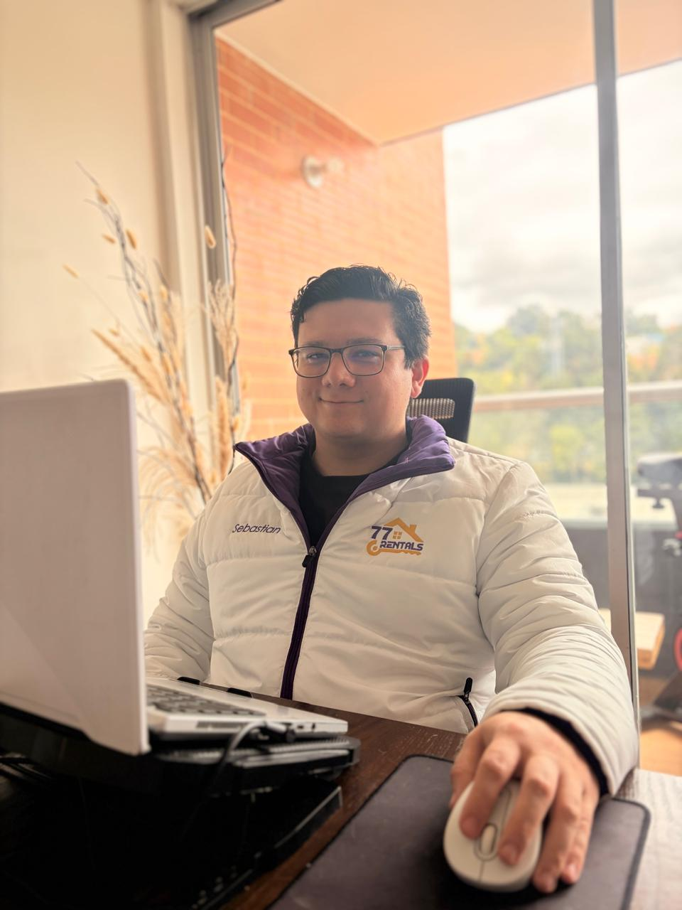

My Story
Mark Twain
I took that advice literally, from a Bogotá classroom to Shanghai markets and Silicon Valley boardrooms. Here's the journey it started.

Hi! I'm Sebastian, 29, from Colombia. I currently lead sales as Head of Sales at Thankz Talent Solutions, while building my own venture, 77Rentals, in the tourism space. I'm also a mentor in finance & investing, crypto, and AI.
I travel Colombia and the world with my loyal companion, Cosmo.
Graduated from Colegio Gran Bretaña in Bogotá, one of Colombia's top international schools. That same year, I packed up for Tampa, Florida to start at the University of Tampa, set on studying criminology.

Criminology gave way to international business, and a scrappy sustainability venture called 'No More Plastic.' We took 2nd place in a Tampa pitch competition. First taste of building something from nothing.

Moved to China for three months, working with a Colombian import/export company, representing the brand at trade events, building its presence on Taobao and WeChat, and learning to close deals across a language and culture I didn't grow up in.



Graduated with Honors in International Business & Entrepreneurship from the University of Tampa. My mum flew in from Colombia to watch me cross the stage, sash and all.
Josh, a great mentor of mine, is in that photo too. He's not with us anymore, but his teachings will live on forever.



Worked with the Medellín Chamber of Commerce to bring presidents and HR VPs from Colombia's biggest companies to Silicon Valley, sitting down with Google, Meta, Amazon, and LinkedIn to study culture, talent development, and strategies to bring home. At Google, my bionic hand caught the attention of a few engineers. They were impressed enough to visit Colombia later that year.
A short stint in banking and financial advisement, just long enough to confirm that sales and international trade were where I belonged.
COVID-19 brought me back to Colombia to be with family, and I stayed to build. I launched my own consulting practice, connecting Chinese and Korean manufacturers with buyers in Colombia, the US, and Qatar for PPE and protective equipment. At the same time, I worked with a dispatch and logistics company, coordinating with US DOTs to keep trucks moving through lockdown.
Joined Virtual Emily, then Thankz Talent Solutions, placing top Colombian talent with American and European companies. Remote work before 'remote-first' was even a category.
As Head of Sales at Thankz, I grew the customer base 200%, generating $760K-$950K+ in placement revenue through 30+ specialized AI and finance placements. I built an 8-person SDR team, then introduced agentic AI workflows that drove a 75% efficiency gain, letting a lean 2-person team do the work of 8. Along the way, I expanded operations into 14 countries.

I work at Thankz during the week, and 77Rentals is my weekend hobby, one I love. It started as AI-powered hosting management software and a guest-experience platform, and has grown into 3 properties of my own, plus an Airbnb Coach guiding new hosts through it all.
Always building, always learning, and always open to what's next, whether that's with a new company or working with Colombia's government. If that's you, let's talk.
The résumé covers the work. This is everything else.
English and Spanish, native in both. I think in whichever one gets the deal done.
I have one hand. My other is a bionic hand, engineered and built right here in Colombia. A daily reminder of what this country is capable of.
During my Tampa years, I visited Disney World almost every Wednesday. Still not over it.
Comic-Con regular, superhero completionist, and proud of it.
Rarely miss a match. Ask me about my team.